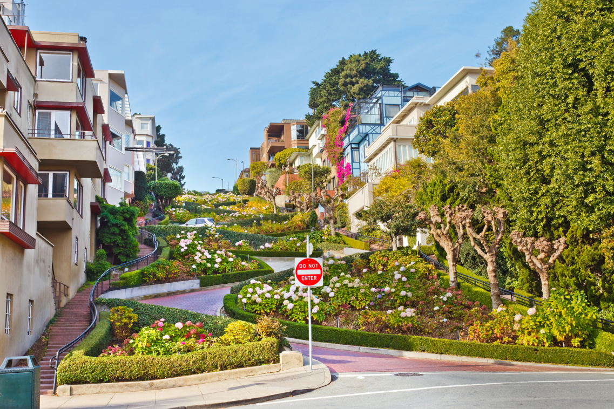

"World's crookedest street."
Known as the "crookedest" street in the world, the steep hills and sharp curves of this one-way road pass by grand Victorian mansions and attract millions of tourists each year.
Whether you want to attempt a drive down Lombard Street or you’d rather just take a picture of this location, there are plenty of ways to see this historic site. As a fully functional public road, it’s free to visit this area pretty much any time.
